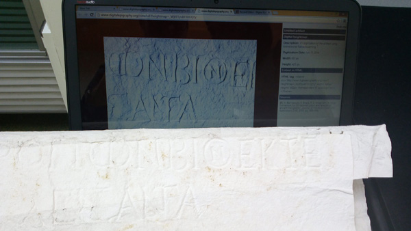

GAINESVILLE, Fla.
October 15, 2014.
A collaborative team from Université Lyon 2, Maison de l'Orient et de la Méditerranée, the French School of Athens (École française d’Athènes), and the Digital Epigraphy and Archaeology group at the University of Florida have received a grant award from the French Ministry of Higher Education under the grant program BSN5 2014 1.This collaborative project titled "e-stampages" is lead by Prof. Michèle Brunet and is aiming to digitize and disseminate electronically the large collection of ektypa (estampages in French) of inscriptions from Delphi, Thasos, Delos, Crete, Aetolia, Chalcidice, Asia Minor, Boeotia, and Homole2.
The awarded amount of €53,500 will cover the digitization costs of nearly 8000 casts of inscriptions and is expected to be completed by June 2016. The database that will be created will contain 2D and 3D digitized records of the entire collection as well as metadata entries regarding the original inscriptions.
During last summer, the team performed a series of pilot 3D digitization experiments at the University of Lyon in order to establish an efficient process that can be followed in such a large scale digitization project. In this pilot study selected paper casts of inscriptions were digitized using the shape-from-shading framework3 of the Digital Epigraphy Toolbox.

Below you can interact with one of the preliminary 3D digitized models. Use touch gestures or mouse movements to interact with the e-stampage. You can rotate, zoom, relight and view in full screen information about this inscription.
This important historical evidence can now be easily accessed and studied by scholars using this on-line viewer. One of the advantages of the Digital Epigraphy Toolbox viewer is that it can be easily embedded into websites or other databases by using the following HTML tag:
The above HTML tag corresponds to the sample inscription from the estampages collection at the University of Lyon 2. You can find the corresponding embed-tag of other exhibits within the information provided in their records in the Digital Epigraphy Toolbox4.
The DEA editorial team
References:
1. French Ministry of Higher Education grant program BSN5 2014. http://www.enseignementsup-recherche.gouv.fr/cid24149/dgesip.html
2. The E-STAMPAGES project public announcement http://www.efa.gr/index...
3. A. Barmpoutis, E. Bozia, R. S. Wagman, "A novel framework for 3D reconstruction and analysis of ancient inscriptions", Journal of Machine Vision and Applications
2010, Vol. 21(6), pp. 989-998. PDF
4. Digital Epigraphy Toolbox, www.digitalepigraphy.org/toolbox.
The Digital Epigraphy Toolbox was funded in part by the NEH grant HD-51214-11.